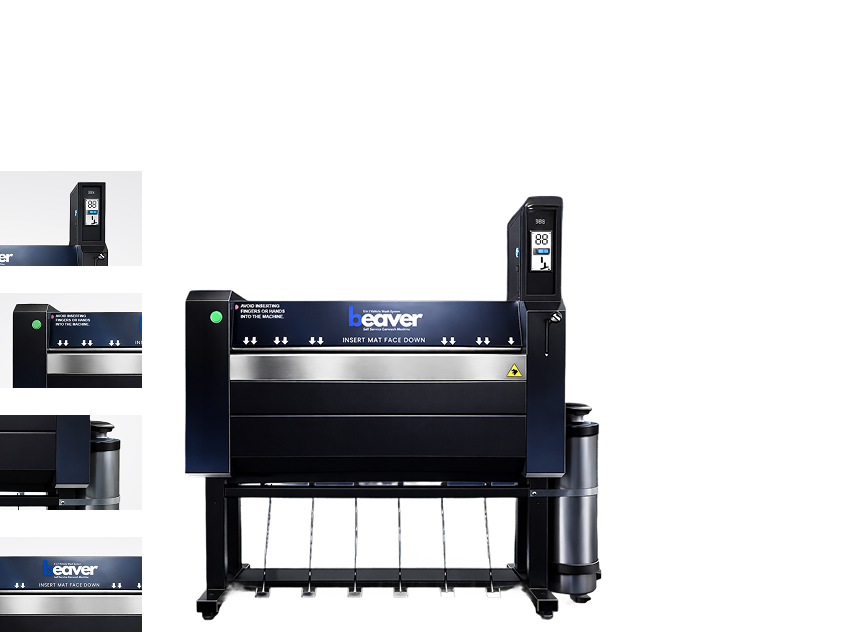

Start the Beaver car mat cleaning machine by making a payment.

Upgrade your business with our best car mat cleaner machine
Car mat cleaning machine
Innovative Beaver car mat cleaner machines deep clean and sanitize the car mats while maintaining the quality and appearance of the car mats. As our car mat cleaner machine uses high-pressure water, car mat cleaning detergents, and professional brushes, we offer thoroughly cleaned car mats with restored original mat colors in just 3 minutes.
Enhance your business with our best car mat cleaner machine and provide a convenient and efficient car mat cleaning solution for your customers.
-
Minimal Human Assistance
Automatic operation system allows independent car mat cleaning with minimal staff assistance.
-

24/7 Revenue Stream
Self-service car mat cleaning machines are designed for commercial use and are able to operate long hours, generating revenue 24/7.
-
Low Operation Costs
Car mat cleaning machines use controlled amounts of water and electricity compared to manual cleaning, reducing operation costs.
-
Professional Image
Installing an automatic car mat cleaner enhances your brand perception as modern and customer-oriented.
Open the car mat cleaner machine like a car door without any complicated controls.
Collect the fresh and sanitized car mat in just 3 minutes!
Place the car mat facing down for a deep and thorough cleaning.
-
Fast Cleaning Cycle
The complete cleaning cycle which includes rinsing, washing, and drying, only takes 3 minutes in our automatic car mat cleaner.
-
Deep Cleaning Power
Our advanced cleaning system reaches deep into the car mat fibers, removing grime and stains.
-
Gentle Professional Brushes
Beaver car mat cleaner machine uses gentle yet effective cleaning brushes and water to protect the quality and colors of the original car mat while cleaning.
-
Convenient Payment System
Both coin and cashless payment systems are integrated into our car mat cleaner machines, ensuring a smooth and convenient purchase.


Business
Opportunities
Start your own venture
Keeping car mats clean is important to maintain a clean, and hygienic car interior. Beaver Car Mat Cleaner Machine offers a convenient and efficient solution by cleaning car mats in just 3 minutes!
Whether you are starting an automatic car mat cleaner machine business or adding car mat cleaning service to your existing car wash business, automated car mat cleaner machines are the perfect choice. By choosing Beaver Energy as your trusted partner, you will have access to proven equipment, a tested concept, and full support to get started.
Frequently Asked Questions
Make a payment to start the machine, open the unit like a car door, place your car mat facing down, and collect your freshly cleaned mat in about 3 minutes. The cycle uses high-pressure water, car mat cleaning detergents, and professional brushes for rinsing, washing, and drying.
It costs only S$5.00 for a 3-minute cleaning cycle. You can pay with coins or cashless options.
Yes. Our car mat cleaner uses gentle yet effective professional brushes and controlled water flow to deep clean while protecting the quality, colors, and appearance of most common car mat types.
For a clean and hygienic car interior, we recommend cleaning car mats regularly—especially after wet weather, heavy use, or when dirt, stains, and odors build up. A quick 3-minute cycle makes routine cleaning easy.
The machine combines high-pressure water, car mat cleaning detergents, and professional brushes to reach deep into mat fibers—removing grime and stains through rinsing, washing, and drying while helping restore original mat colors.
Look for a self-service unit with a fast cleaning cycle, deep-cleaning power, gentle brushes that protect mat quality, and convenient payment options. Beaver Car Mat Cleaner Machine is built for commercial use with all of these features.
An automatic car mat cleaner saves time and effort while delivering a thorough, hygienic clean in just 3 minutes—without the hassle of manual scrubbing or waiting for mats to dry at home.
Yes. Gentle professional brushes and controlled cleaning help protect mat materials while removing dirt and stains. The system is designed to maintain mat quality and appearance during each cycle.
A complete cleaning cycle—including rinsing, washing, and drying—takes only 3 minutes.
The Beaver Car Mat Cleaner Machine is designed for standard car mats used in most passenger vehicles. For unusually large or heavy mats, check the unit opening size at your location or contact us for guidance.
Yes. Whether you are starting a dedicated car mat cleaning business or adding the service to an existing car wash, Beaver Energy provides proven equipment, a tested concept, and full support to help you get started. Contact us to learn more.